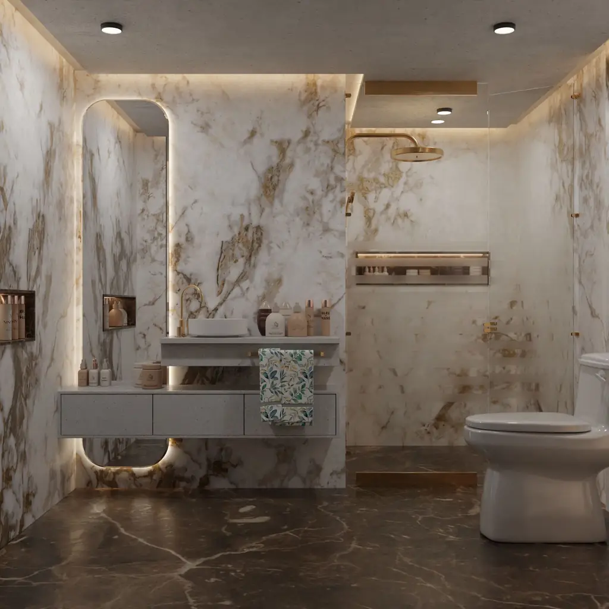

Rénovation complète
Plans, choix des matériaux avec vous, dépose, plomberie, électricité, carrelage et pose des équipements.
Votre nouvelle salle de bains, livrée à la date promise, sans que vous ayez à gérer le chantier.
Douche à l'italienne, baignoire îlot, marbre, robinetterie de designer : nous concevons et réalisons votre salle de bains de A à Z, avec un seul interlocuteur. Et pour une fuite ou un dépannage, un plombier se déplace dans la journée.
Rappel sous 24 h. Dépannage dans la journée pour nos clients.

Cliquez sur votre situation : le formulaire se remplit tout seul.
Nos interventions
Plans, choix des matériaux avec vous, dépose, plomberie, électricité, carrelage et pose des équipements.
Receveur à fleur de sol, étanchéité sous carrelage, paroi sur mesure, évacuation linéaire discrète.
Pose de marques que vous choisissez, thermostatiques, WC suspendus, meubles vasques, sèche-serviettes.
Fuite, robinet qui goutte, chasse d'eau, canalisation bouchée : intervention dans la journée.
Remplacement, dimensionnement selon vos usages, pose de ballons plats pour les petits espaces.
Coordination avec le syndic, respect des horaires, protection des parties communes et de l'ascenseur.
Comment ça se passe
Vous nous décrivez votre projet et vos envies, photos à l'appui si vous le souhaitez.
On mesure, on vérifie les évacuations, on vous montre le rendu avant de commencer.
Chaque poste chiffré, matériaux compris. Date de début et durée écrites.
Un chef de chantier unique, un point chaque semaine, réception ensemble.
Chantiers récents
Paris 16e · Haussmannien
Neuilly-sur-Seine · Appartement
Paris 17e · Duplex
Nos engagements
Olivier Marchal, fondateur et chef de chantier
« Trois semaines, pas un jour de plus. Le rendu est exactement celui du plan 3D, et l'appartement est resté propre. »
« Fuite chez le voisin du dessous un samedi : ils sont venus le jour même et ont tout géré avec le syndic. »
Questions fréquentes
Votre question n'est pas là ?
Appelez-nous au 01 99 00 41 26.
Le budget dépend de la surface, des matériaux (carrelage, marbre, pierre) et des équipements choisis. Après la visite, vous recevez un devis détaillé poste par poste, avec plusieurs options si vous le souhaitez.
Comptez en général de deux à quatre semaines pour une salle de bains complète, moins d'une semaine pour remplacer une baignoire par une douche. La durée exacte est écrite sur le devis.
Presque toujours, mais cela dépend de la pente possible pour l'évacuation. Nous le vérifions lors de la visite et proposons un receveur extra-plat si le sol ne permet pas une douche à fleur de sol.
Oui, pour une fuite ou un dégât des eaux, un plombier se déplace dans la journée à Paris Ouest et à Neuilly.
Pour des travaux touchant les canalisations communes, oui. Nous préparons les informations pour le syndic et respectons le règlement de l'immeuble.
Oui. Nous vérifions leur compatibilité avant la commande et les posons comme s'il s'agissait des nôtres.
Devis gratuit
Décrivez-nous votre salle de bains ou votre problème. On vous rappelle pour fixer la visite, gratuite et sans engagement.
Du lundi au vendredi, 8 h à 19 h
21 rue de la Pompe, 75016 Paris
Nous intervenons à Paris 7e, 8e, 15e, 16e, 17e, Neuilly-sur-Seine, Boulogne-Billancourt, Levallois-Perret, Saint-Cloud, Issy-les-Moulineaux, Rueil-Malmaison.